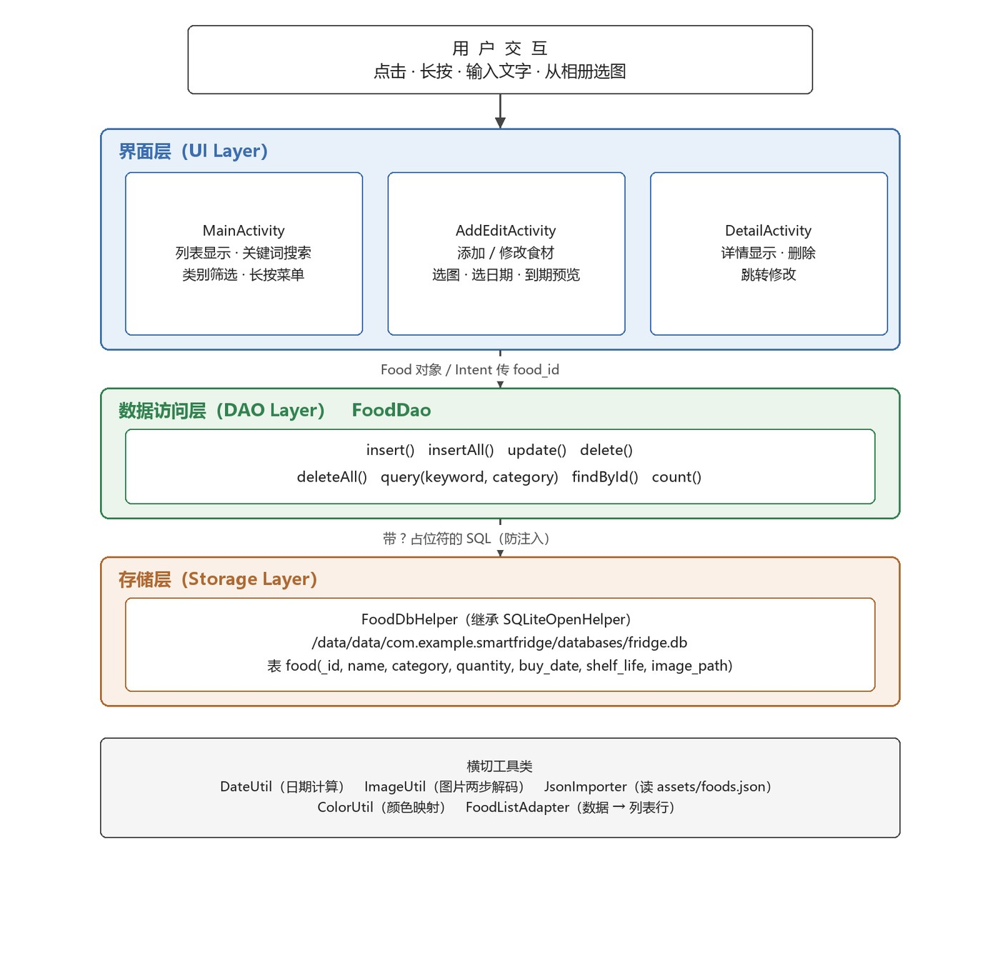
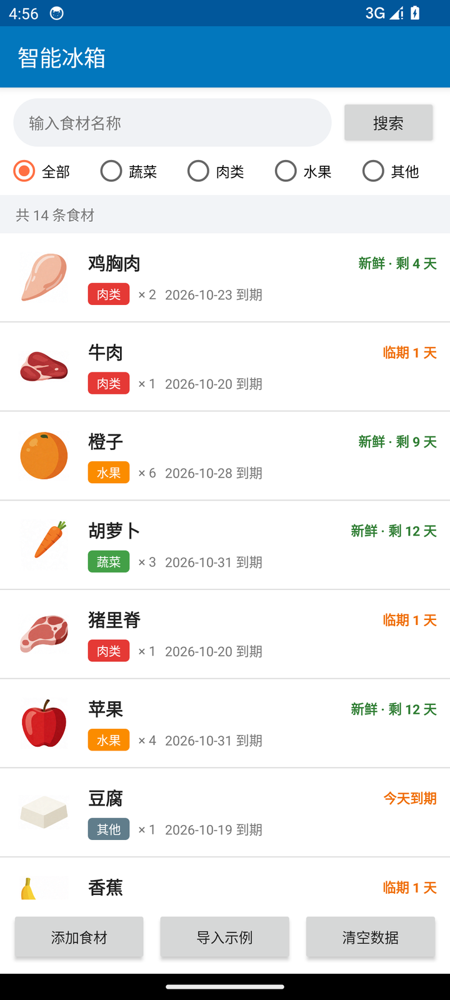
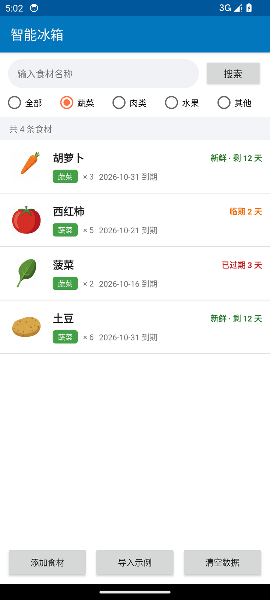

SmartFridge 智能冰箱 App
一个管理冰箱食材的 Android 应用：图标化食材列表、带图详情页、分类筛选与长按操作菜单。以验收文档先行的方式开发，并附 90 秒 AI 结对（VibeCoding）开发实录视频，从零到跑通全程可回放。

开发实录视频画面（90 秒版）
Overview
它做了什么
- 食材库存管理：图标卡片列表、带图详情页、蔬菜/水果分类筛选、长按快捷操作菜单。
- 内容由 JSON 导入驱动——食材数据与图片来自结构化 JSON 文件，界面不写死数据。
- 验收先行：系统总体设计框图、JSON 导入流程图、页面跳转关系图先于编码完成，作为验收依据。
- 全程录像：90 秒实录展示从空工程到可运行产品的完整过程（AI 结对开发工作流）。
Architecture
系统设计

Demo
界面与实录
90 秒开发实录（带 BGM）。点击播放，不点不加载。




说明：本项目为本地项目（未公开仓库），验收文档与实录视频可作为工作流演示。